MERMAID
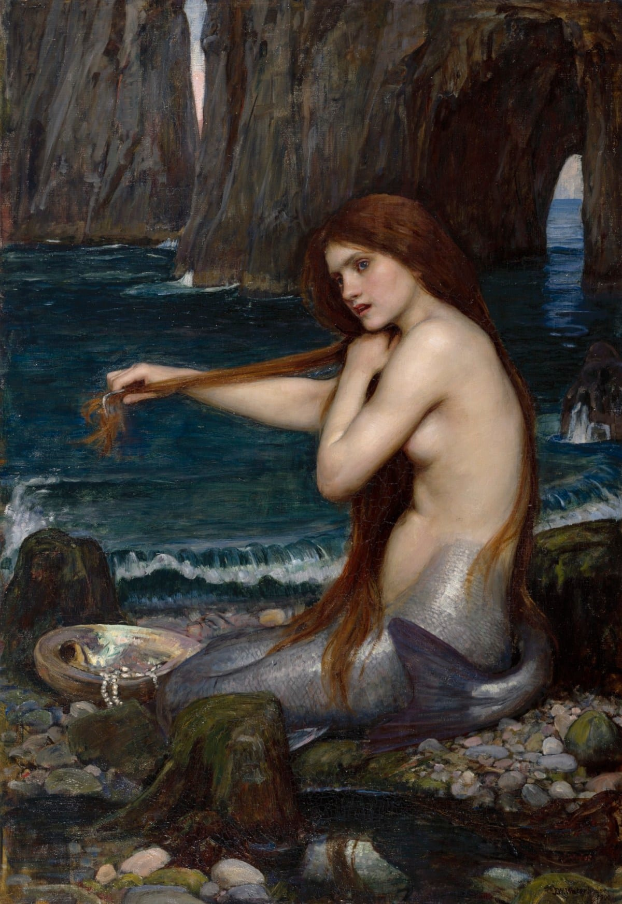
Introduction
In ancient Roman mythology, Salacia was the goddess of saltwater and the wife of Neptune, embodying the calm and mystery of the salty sea depths. Similarly, in the ancient and medieval coastal regions of Britain, the figure of the mermaid—mulier piscis cauda, a woman with the tail of a fish—has long inspired tales blending wonder and peril, reflecting the complex relationship between humans and the oceanic realms. British mermaids are typically described as having the upper body and head of a woman joined to a fish’s tail, often singing melodious songs and carrying a mirror or comb as symbols of beauty and allure. Their nature is dual: sometimes benefactors who warn sailors of storms and guide the lost, and other times enchantresses who lure victims beneath the waves to watery graves. They may grant blessings or curses depending on the respect shown by mortals. Among the most famous British legends is the Mermaid of Zennor from Cornwall, who enchanted a human singer to live with her beneath the sea forever, and the Lady of the Lake, who—while not strictly a mermaid—embodies the mystical feminine aquatic spirit and is famed for giving King Arthur his sword, Excalibur. These aquatic enchantresses symbolize the sea’s mystery, the dangers faced by coastal people, and the blurred boundary between natural and supernatural worlds, underscoring humanity’s respect and fear of the maritime domain.
When we talk about “mermaid”, the first images that come to mind are usually those of Odysseus’ mermaid, the temptress bordering on the sea monster, who contrasts with the disturbing paintings of bird-women on Greek vases… Or the famous redhead from the world of Disney who dreamed of “going there” – a bit like the little undine in the Andersen fairy tale that inspired her.
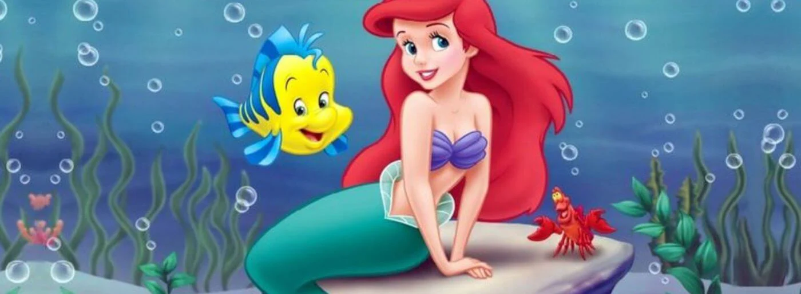
Legends of half-human, half-fish creatures go back thousands of years. Everyone has seen pictures of mermaids. Sightings were made by the early Arabs and the Greek Pliny in 586 A.D. Many medieval sailors claimed to have seen them and such reports continued right into the 1900's.
Literary
In 1842, a member of the British Lyceum of Natural History, dr. J. Griffin claimed that he caught a mermaid near Fejee Islands in the South Pacific. Everybody expected to see a young, beautiful woman, but the creature itself was lesser attractive.
The Folk-Lore of the Isle of Man A. W. Moore [1891]
The Mermaid, too, was well-known. She had no special name in Manx, being called simply Ben-varry, or “Woman of the sea,” and had the same form, half fish, half woman, as represented in the tales of other countries. She was generally of an affectionate and gentle disposition, though terrible when angered, and she was greatly given to falling in love with young men. Of her mate, the Merman, Dooiney-varrey, “Man of the sea,” or Phollinagh, as he is variously called, less is known.
IT is a prevalent opinion in the North that all the various beings of the popular creed were once worsted in a conflict with superior powers, and condemned to remain till doomsday in certain assigned abodes. The Dwarfs, or Hill (Berg) trolls, were appointed the hills; the Elves the groves and leafy trees; the Hill-people (Högfolk [a]) the caves and caverns; the Mermen, Mermaids, and Necks, the sea, lakes, and rivers; the River-man (Strömkarl) the small waterfalls. Both the Catholic and Protestant clergy have endeavoured to excite an aversion to these beings, but in vain. They are regarded as possessing considerable power over man and nature, and it is believed that though now unhappy, they will be eventually saved, or faa förlossning (get salvation), as it is expressed.
The mermaid seems to be older. Its origins goes back to 1820s, when supposedly, American sea captain Samuel Barrett Edes bought "Fejee Mermaid" from Japanese sailors for $6,000. The mermaid was displayed in London in 1822 and was advertised in a publication by J. Limbird in the "Mirror" Twenty years later, the same mermaid was exposed in Barnum's American Museum in New York in 1842, but it then disappeared.... According to Wikipedia: "It was likely destroyed in one of Barnum's 🔥 many fires that destroyed his collections" ...

In Ireland and Scotland there are the 'Merrow', which are said to be beautiful, gentle, modest and kind. They wear a red cap and, if this is captured and hidden from them, they will shed their skins and stay on land. However, most times they eventually retrieve the cap and return to the sea. They also lure young men to follow them beneath the waves. Here they live in an enchanted state. Merrow music is often heard coming from beneath the waves.
P.T Barnum- Phinneas Taylor Barnum is the founder of the Barnum and Bailey circus. He was an American showman known for promoting hoaxes. One of those hoaxes was the “Feejee Mermaid.” It was the upper half of a dried monkey sewn to the tail of a fish. This was on display in the 1840s and created a mermaid craze in New York. Barnum teamed up with Levi Lyman, who posed as a naturalist to sell the mermaid to the public. It was a success and Barnum took it on a tour in London.
Christopher Columbus- Christopher Columbus was the first documented account of seeing a mermaid. He wrote that the mermaid was not as beautiful as legend, and had a masculine face. It is believed that it was really a dugong that he saw
John Smith- There is a story that John Smith, of Jamestown, sighted a mermaid. He said she was graceful and “by no means unattractive.” It is debatable whether it is historically accurate or just the story of a writer.
Edward Teach- Edward Teach was an English pirate who sailed around the West Indies. He was famously known as Blackbeard. He was a huge man and one of the most dangerous pirates around. In a log book it is recorded that Blackbeard made an order to steer clear of a certain area that he believed was inhabited by merfolk.
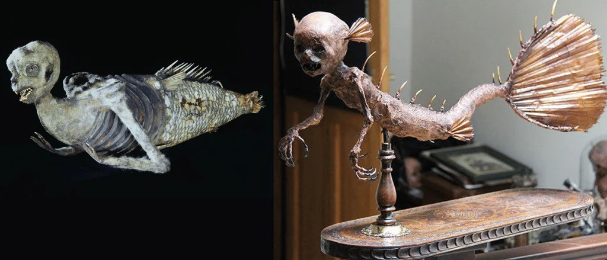
Jenny Hanivers Sailors around the world in the 16th century earned extra income by creating Jenny Hanivers as novelties to tourists. They were advertised as mermaid bodies, but they were actually ray carcasses that had been dried and carved. They were debunked in 1558 by Swiss naturalist Konrad Gesner.
Cornish myth
A peninsula in Cornwall called The Lizard has a high plateau surrounded by the sea, with numerous hidden little coves and beaches, just the sort of area for mermaid stories. Many Cornish people, particularly sailors, have claimed to have seen or heard a mermaid and belief in them was once widespread. They hold many stories of mermaids which were seen on the rocks and of mermaids sitting weeping and wailing on the shore.
The mermaids in Cornish stories possess many of the features common among mermaids the world over. They are beautiful, often seen combing their golden hair and live for a long time without ageing. However, their mermaids are commonly more curious about humans, and sympathetic to their plight. As such, some people were said to have obtained knowledge of healing, of the future, and other supernatural abilities from them, which they could then pass down.
Assyrian Mythology
The concept of mermaids, as we know them today, does not appear directly in ancient Assyrian texts, but the Assyrians and neighboring Mesopotamian cultures had deities and mythological beings that closely resemble the idea of mermaids. These figures combined human and aquatic characteristics, symbolizing wisdom, fertility, and the mysterious powers of the sea.
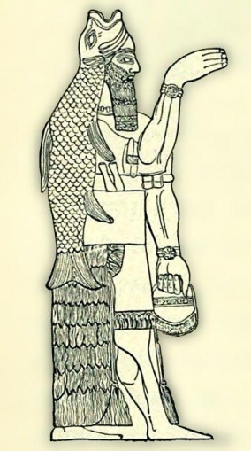
The Goddess Atargatis (Derketo)
Atargatis, also known as Derketo and sometimes associated with Astarte, is one of the earliest known mermaid-like figures in the ancient Near East and is considered the oldest mermaid legend. She was worshipped around 3,000 to 4,000 years ago as the Assyrian goddess of the moon, water, and femininity. Often depicted as a woman with a human upper body and a fish-like lower body, she became one of the first recorded representations of a "mermaid" in history. According to the Greek historian Diodorus Siculus, Atargatis was venerated in Ashkelon, and her cult later spread into Assyria and Babylonia. Her myth tells that when her mortal lover died, she drowned herself in the sea out of grief after giving birth to his child on the shore. However, the gods did not let her die and instead transformed her into a mermaid. Symbolically, she came to embody fertility, the sea, and the life-giving powers of water, representing a perfect fusion of human beauty and divine aquatic strength.
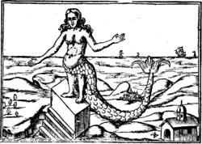
Some sources, including the Catholic Encyclopedia1, say that Dogan" is a merman, or that half of his body is that of a man, while the other half is fish. This belief stemmed from the interpretation that the name Dagon is related to the Hebrew word for fish, dag, and means “little fish.”
African mythology
Mami Wata, whose name means “mother of water,” is one of the most famous aquatic spirits in West and Central Africa. She is often depicted as a stunningly beautiful woman with the lower half of a fish or sometimes as a snake-woman hybrid, though she can also appear fully human. Mami Wata is associated with wealth, healing, spiritual knowledge, seduction, and danger, embodying both the benevolent and mysterious powers of water. Worshippers frequently offer her gifts such as coins, perfume, or alcohol in hopes of gaining her favor. Her veneration extends across Nigeria, Ghana, Cameroon, Congo, and even among African diasporas in the Caribbean. In African spiritual traditions, Mami Wata is not alone. Among the Dogon people of Mali, the Nommo are amphibious, fish-like ancestral spirits who are said to have descended from the sky. They are tied to creation myths, water, and cosmic order, serving as teachers who impart knowledge to humanity in a way reminiscent of the Mesopotamian figure Oannes. Other African water deities also hold significant roles. Yemoja (or Yemaya), revered in Yoruba tradition, is a nurturing sea goddess and protector of women and children, often linked to rivers and oceans. Similarly, Nkisi water spirits in Central Africa are believed to dwell in rivers and lakes, capable of blessing or cursing people depending on how they are treated. Together, these deities and spirits reflect the deep spiritual and cultural connection between water, life, and divine power across African traditions.
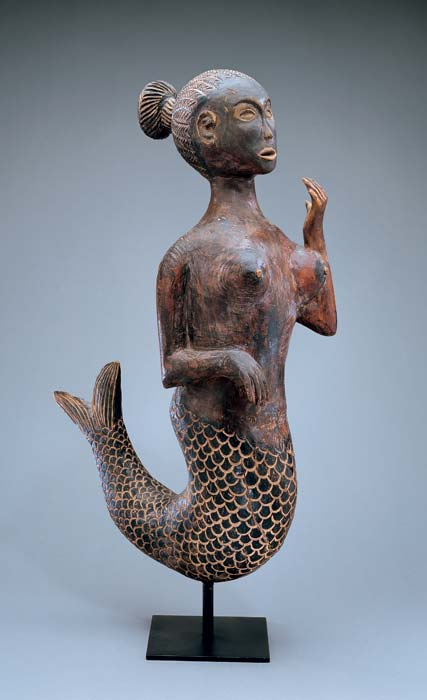
Greek mythology
In early Greek mythology, Sirens were originally described not as half-fish beings but as creatures with the upper body of a woman and the lower body of a bird, dwelling on rocky islands. They were infamous for their enchanting voices, which lured unsuspecting sailors to their doom, as famously portrayed in the story of Odysseus in Homer’s Odyssey. Over time, particularly during the Hellenistic and later Roman periods, the image of the Sirens began to merge with that of sea-maidens. By the medieval era, they had transformed into the familiar mermaid-like beings with fish tails, blending danger and beauty into a single mythological figure. Alongside the Sirens, Greek mythology also featured the Nereids—daughters of Nereus, the "Old Man of the Sea." These benevolent sea nymphs were often depicted as beautiful young women who lived beneath the waves, sometimes aiding sailors in distress. Among them, Thetis, the mother of Achilles, is one of the most well-known figures. Unlike the dangerous Sirens, the Nereids embodied a gentler, protective aspect of the sea and served as an early precursor to the positive image of mermaids in later traditions. Greek mythology also introduced Triton, the son of Poseidon and Amphitrite, who was depicted as a merman with the upper body of a man and the lower body of a fish. As a herald of the sea, he was known for blowing a conch shell to calm or stir the waves. Triton and other merman figures established the visual archetype of half-human, half-fish beings, which profoundly influenced later artistic and cultural depictions of mermaids. Through trade and cultural exchange, the Greeks adopted and transformed earlier Mesopotamian concepts such as the fish-man Oannes, blending them into their mythology. Over time, these Greek sea spirits—Sirens, Nereids, and Tritons—shaped the foundation of Roman and later medieval European mermaid folklore, bridging the gap between ancient myth and the enduring mermaid legends we know today.
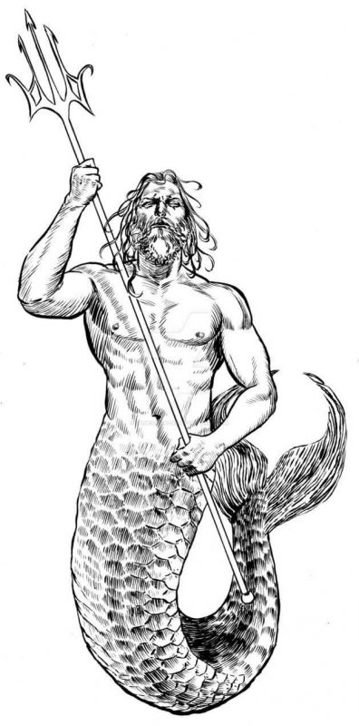
British folklore
In British folklore, mermaids are mythical sea creatures often portrayed as beautiful women with fish tails, embodying a blend of enchantment and danger. These stories have been passed down through coastal communities in England, Scotland, Wales, and Ireland for centuries, reflecting the deep connection between people and the sea. Typically, British mermaids are described with the upper body of a woman and the lower body of a fish or sea creature. They are often depicted singing enchanting songs or playing instruments such as harps, and sometimes carrying combs and mirrors—symbols of vanity and allure. The legends paint mermaids as having a dual nature: some are benevolent beings who warn fishermen of storms or shipwrecks, while others are malevolent, luring sailors to their watery graves. It is also said that mermaids could grant wishes or bestow gifts when treated with respect. Famous tales include the Mermaid of Zennor from Cornwall, where a mermaid falls in love with a church choir singer and ultimately takes him to live beneath the sea forever. Additionally, figures like the Lady of the Lake from Arthurian legend, sometimes associated with mermaid-like qualities, serve as mystical water spirits who play pivotal roles in legendary narratives, such as bestowing King Arthur’s sword, Excalibur. Another notable figure in British folklore is Sabrina, a river nymph associated with the River Severn. According to legend, Sabrina was the daughter of King Locrinus, who abandoned his wife Gwendolen to be with another woman. Tragically, Sabrina and her mother were drowned in the Severn River by Gwendolen, and as a result, Sabrina became the nymph or goddess of the river. Sabrina’s story, like that of the mermaids, highlights the mystical and sometimes tragic connection between humans and the watery realms in British myth. Together, these tales of mermaids and river nymphs symbolize the mystery and unpredictability of the sea and waterways, reflecting the respect, fear, and fascination coastal and riverine communities have held for the natural world throughout history.
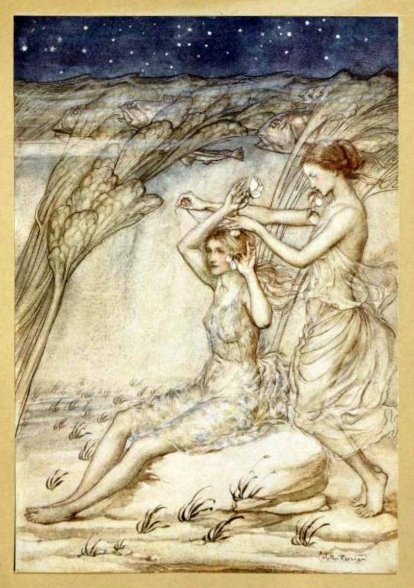
Roman folklore
In ancient Roman mythology, Salacia was the goddess of saltwater and the wife of Neptune, embodying the calm and mystery of the salty sea depths. Similarly, in the ancient and medieval coastal regions of Britain, the figure of the mermaid—mulier piscis cauda, a woman with the tail of a fish—has long inspired tales blending wonder and peril, reflecting the complex relationship between humans and the oceanic realms. British mermaids are typically described as having the upper body and head of a woman joined to a fish’s tail, often singing melodious songs and carrying a mirror or comb as symbols of beauty and allure. Their nature is dual: sometimes benefactors who warn sailors of storms and guide the lost, and other times enchantresses who lure victims beneath the waves to watery graves. They may grant blessings or curses depending on the respect shown by mortals. Among the most famous British legends is the Mermaid of Zennor from Cornwall, who enchanted a human singer to live with her beneath the sea forever, and the Lady of the Lake, who—while not strictly a mermaid—embodies the mystical feminine aquatic spirit and is famed for giving King Arthur his sword, Excalibur. These aquatic enchantresses symbolize the sea’s mystery, the dangers faced by coastal people, and the blurred boundary between natural and supernatural worlds, underscoring humanity’s respect and fear of the maritime domain.
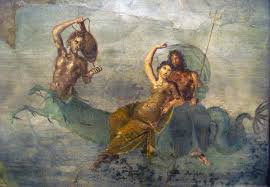
Japanese folklore
The Ningyo
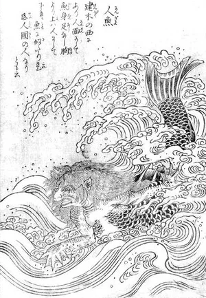
It does seem that mermaids in traditional Japanese lore were quite different to the beautiful, alluring and feminine ones of the Western imagination. There is a creature in Japanese folklore called the ningyo (the Japanese word is comprised of the characters for “human” and “fish”). The ningyo is described as quite an eccentric and creepy creature - a sort of human-fish with the mouth of a monkey. It is thought that these human-fish stories arrived in Japan via China, where various lore around the ningyo can be traced back to as early as the fifth century BCE. An old belief in Japan was that eating a ningyo would grant you eternal life. The most famous Japanese folklore about this is the yaoya bikuni legend where a girl eats the flesh of a ningyo and lives for 800 years.
Over time, depictions of the ningyo were apparently quite varied - some with four limbs, some with just two arms and both the head and body of a fish, some more like the “classic” western idea of an attractive human woman or man with the tail of a fish.
One woodblock shows the ningyo as a frightening looking fish creature with a human face and red devil-like horns, and long black hair. The specimen is described as being 10.6 metres long!

Budhist folklore
Suvannamaccha (Golden Mermaid)
In Thai and Cambodian Buddhist folklore, Suvannamaccha—meaning “Golden Fish”—is a mermaid princess and a striking figure in the Southeast Asian retellings of the Ramayana, known in Thailand as Ramakien and in Cambodia as Reamker She is the daughter of the demon king Ravana (Thotsakan), and originally sent to sabotage the construction of a causeway to Lanka by Hanuman, the monkey general working for Rama. Each rock Hanuman's team placed mysteriously disappeared overnight—only to discover that Suvannamaccha and her mermaid entourage were removing them When Hanuman confronts her underwater, a romance unfolds: instead of fighting, he wins her affection with respect and kindness. She not only ceases her sabotage but assists in building the bridge and returns the stolen stones. Their union results in a son, Macchanu—a half-monkey, half-fish child—symbolizing a remarkable blending of realms
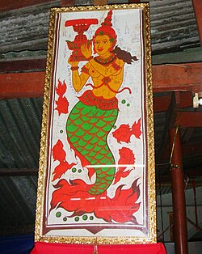
Hinduism folklore
Matsya (Fish Avatar of Vishnu)
In Hindu mythology, mermaid-like beings are not explicitly described in the same way as in Western folklore; however, several aquatic or semi-aquatic figures share striking similarities with them. Among the most prominent of these is Matsya, the first avatar of the god Vishnu. Depicted as a hybrid figure with a human upper body and the lower half of a fish, Matsya closely parallels the imagery of a merman. According to the Puranas and epic traditions such as the Mahabharata and Ramayana, Matsya plays a crucial salvific role in the cosmic order. He warns King Manu—often considered the Hindu equivalent of Noah—of an impending deluge destined to submerge the world. In this myth, Matsya guides Manu’s boat safely across the primordial waters, ensuring the survival of humanity and the preservation of sacred knowledge. Symbolically, Matsya represents divine intervention, the safeguarding of wisdom, and the profound link between the ocean and the origins of creation. This figure, therefore, not only bridges the human and aquatic realms but also embodies the transformative and protective powers that resonate at the heart of Hindu cosmology.
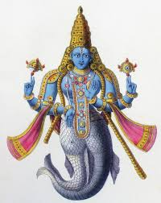
Brazil folklore
In Brazil, a unique aquatic figure emerged from a fusion of Indigenous and colonial beliefs: Iara, the “lady of the waters.” Known as an immortal mermaid dwelling in the rivers of the Amazon, Iara is described as a strikingly beautiful woman who sings to enchant men, luring them beneath the waters. In local folklore, unexplained disappearances in the rainforest are often attributed to her, making her both a feared and revered presence in Brazilian culture.
Malaysia folklore
In Malaysian mythology, mermaids are known as duyung, meaning “Lady of the Sea”, which is where dugongs get their name from. Dugongs are marine mammals from the Sirenia order that live in the Indo-West Pacific region. Drawings of the dugong, which are estimated to have been made between 2,000 and 5,000 years ago, are etched inside Malaysia’s Gua Tambum Cave in Ipoh. Some say they were the inspiration behind many sailors’ tales of sirens and mermaids because of their cultural importance and common physical characteristics: they share the same fluke and fusiform body, and don’t have dorsal fins. It was easy to mistake dugongs for mermaids from afar.
Indonesia folklore
Indonesian mermaids are called putri duyung, with putri meaning princess. Indonesians have a strong belief in the legend of the healing power of mermaid tears, and have even created a mermaid oil that is supposed to help people fall in love. Since they can’t find real mermaid tears, they collect the tears of dugongs under special and ritualistic conditions to make the famous and miraculous oil. Both Malaysian and Indonesian mythologies claim that “their” mermaids originate from the Assyrian goddess Atargatis, who left Syria, crying, after suffering from love. Indonesians claim she swam all the way to their country, while Malaysians believe she went to theirs.
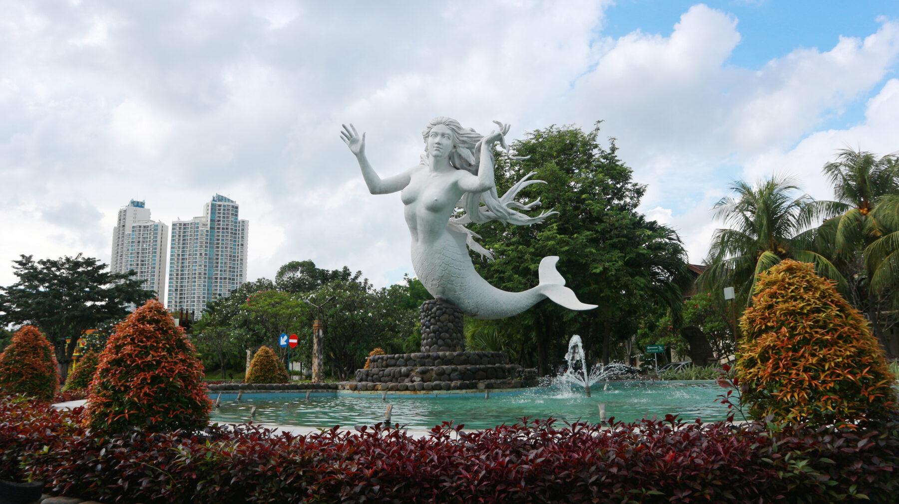
Pictures
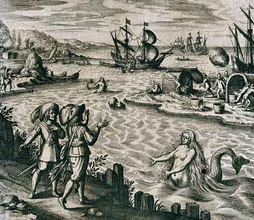
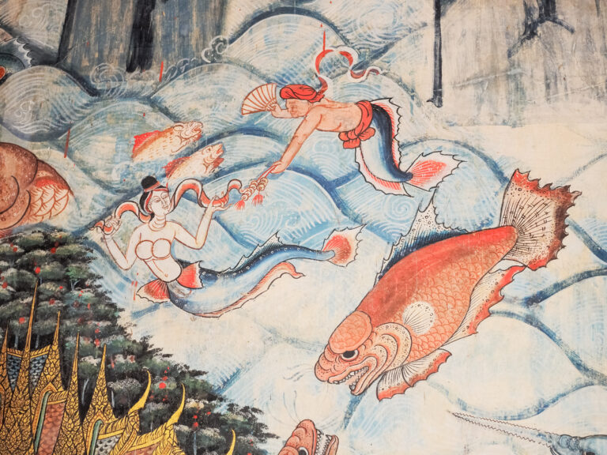
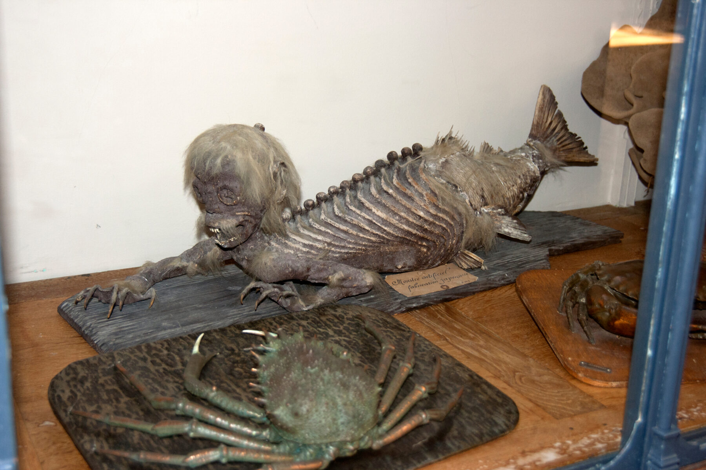
Mermaids: The body found- Animal Planet aired this mockumentary full of fake footage that many people believed to be real. It promoted a narrative about real mermaids being creepy humanoid creatures who live in the depths of the sea. It attacked the subject very scientifically sounding and many people were fooled.
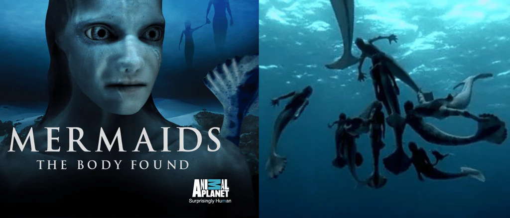
Most of these sightings were treated with scepticism, but some—such as the mermaid sightings near Thurso in 1809—were presented as established fact. As a September 8, 1809 edition of the Kentish Gazette reports: “The existence of Mermaids, or Sea-women, (hitherto generally supposed to be fabulous) seems now to be established, by the evidence of the following copies of original letters, which were transmitted to a Gentleman in Sussex, by Sir John Sinclair, the principal person in the neighbourhood where the extraordinary creatures therein mentioned were seen.
Description of Mermaid
Description of Dr.J.Griffen The mermaid was described as ugly, dried-up, black-looking diminutive specimen, about 3 ft long. Its mouth was open, its tail turned over, and its arms thrown up, giving it the appearance of having died in great agony.
The physical appearance of the mermaid likely dates back to the ancient Babylonian god of the sea, Oannes, and his companions, the Atargatis (Derketo). These companions were in their earliest times depicted as wearing cloaks but over time the cloaks evolved into fish tails. Oannes, an early adaptation of the Sumerian fish-god, Ea, was worshiped as the beneficial aspects of the ocean and a sun god; conversely the Atargatis came to be worshiped as moon-goddesses and represented the ocean’s more destructive aspects.
The physical description of the mermaid has not changed much since its early inception. Typically described as having flowing and long hair either sea-green or sun-ray yellow, they hold mirrors in their hands, symbolic of the moon, as they sit upon the rocks grooming. There are some folklores where the mermaid is not attractive, said to have green teeth, a porcine (piglike) nose, and red eyes. The domain of the mermaid is said to be on the bottom of the sea, made of priceless pearls and coral.
Are sirens and mermaids the same?
While the word ‘siren’ is a translation of ‘mermaid’ in many languages there is a difference between the two. According to folklore mermaids and sirens are not quite the same. You’ll find that the aquatic humanoids in The Little Mermaid are far different than the ones in the show Siren. Sirens and mermaids are both half human, half fish. In fact, sirens are often considered to be a different type of mermaid. Sirens are predators. Sirens are the bad guys, the ones who lure sailors to their deaths. The ones who you picture with spikes, sharp teeth, webbed hands and fierce eyes. They are portrayed as monstrous beasts who eat humans in some cases. While the word ‘siren’ is a translation of ‘mermaid’ in many languages there is a difference between the two. According to folklore mermaids and sirens are not quite the same. You’ll find that the aquatic humanoids in The Little Mermaid are far different than the ones in the show Siren. Sirens and mermaids are both half human, half fish. In fact, sirens are often considered to be a different type of mermaid. Sirens are predators. Sirens are the bad guys, the ones who lure sailors to their deaths. The ones who you picture with spikes, sharp teeth, webbed hands and fierce eyes. They are portrayed as monstrous beasts who eat humans in some cases. While the word ‘siren’ is a translation of ‘mermaid’ in many languages there is a difference between the two. According to folklore mermaids and sirens are not quite the same. You’ll find that the aquatic humanoids in The Little Mermaid are far different than the ones in the show Siren. Sirens and mermaids are both half human, half fish. In fact, sirens are often considered to be a different type of mermaid. Sirens are predators. Sirens are the bad guys, the ones who lure sailors to their deaths. The ones who you picture with spikes, sharp teeth, webbed hands and fierce eyes. They are portrayed as monstrous beasts who eat humans in some cases.